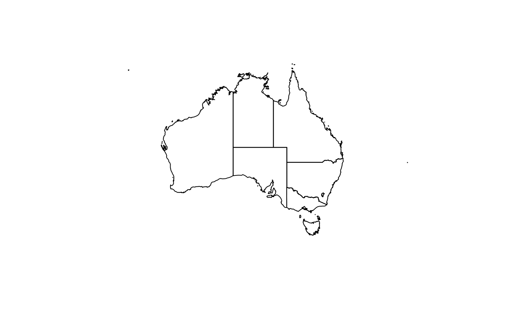
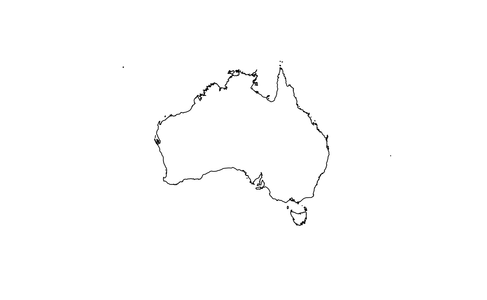
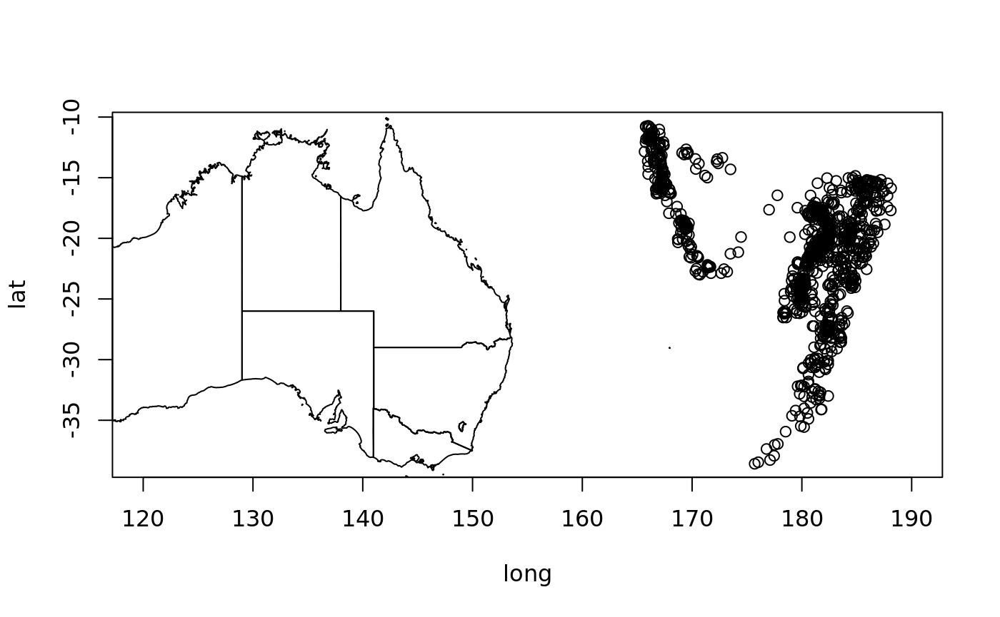
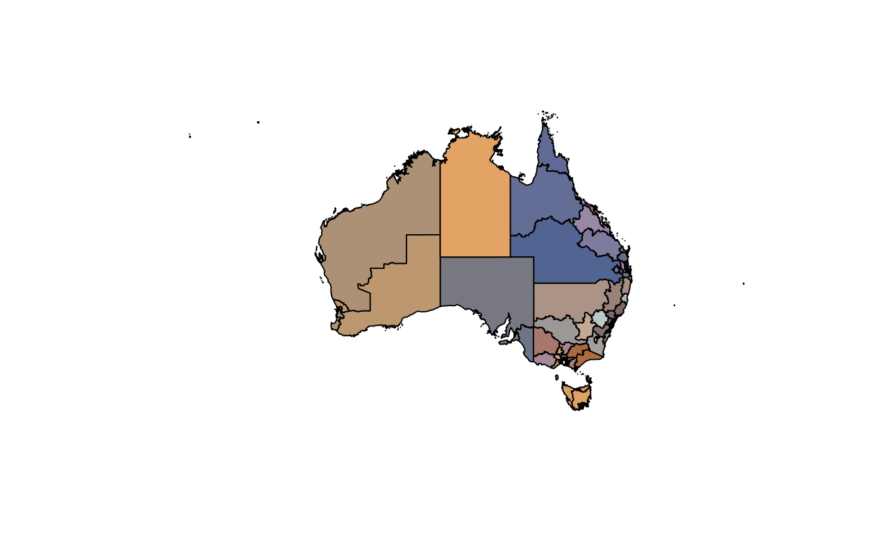
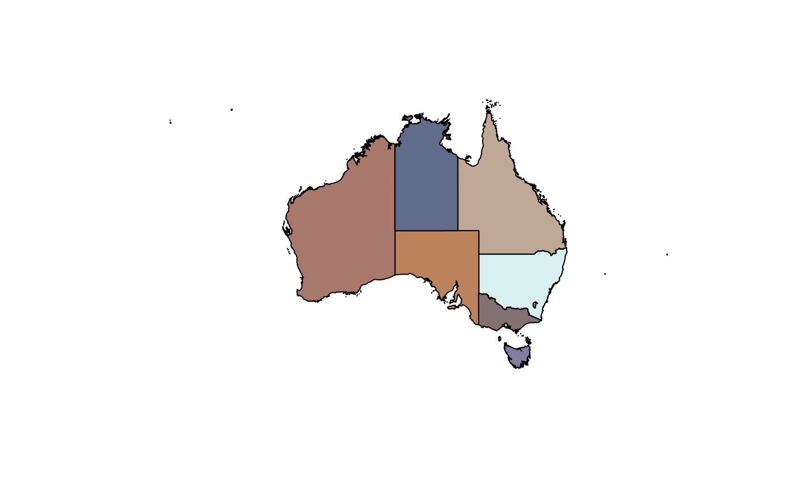

The goal of ozmaps is to get maps of Australia to plot! The package itself is available from CRAN. The package includes several data sets of Australian coastline, state outlines, local municipality boundaries (LGA, Local Government Areas) and electoral boundaries for commonwealth (nation) level.
These data layers may be plotted directly obtained as spatial data objects. The layers are a simplified subset (reduced detail, and not all layers included) of the Australian Bureau of Statistics 2016 map data. The original data sets and the process for their simplication and extraction is outlined in the ozmaps.data package. That package is an unfinished project designed to ease access to the more detailed and full data products that are available.
library(ozmaps)Plot Australia with states.

Plot Australia without states.
ozmap(x = "country")
Add to an existing plot.

Obtain the data used in sf form.
sf_oz <- ozmap_data("states")
class(sf_oz)
#> [1] "sf" "tbl_df" "tbl" "data.frame"
dim(sf_oz)
#> [1] 9 2
print(sf_oz$name)
#> NULLPlot with a custom palette.
if (utils::packageVersion("paletteer") < '1.0.0') {
pal <- paletteer::paletteer_d(package = "ochRe", palette = "namatjira_qual")
} else {
pal <- paletteer::paletteer_d(palette = "ochRe::namatjira_qual")
}
opal <- colorRampPalette(pal)
ozmap("abs_ced", col = opal(nrow(abs_ced)))
